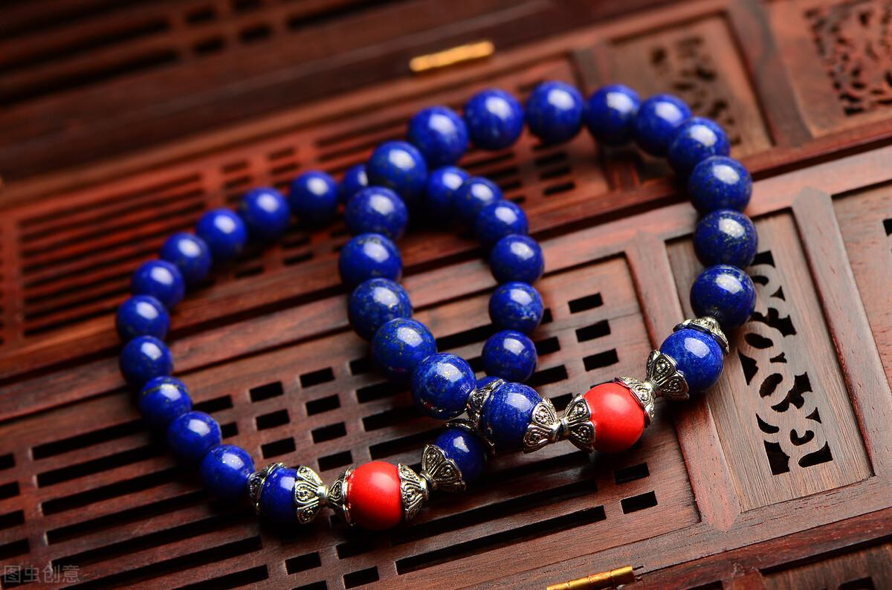

THE SPIRITUAL CLEANSER
透石膏 Selenite
「來自月光的療癒之石，快速淨化氣場與心靈的負擔」
✦ 對應：頂輪、靈魂之星
✦ 五行：水
✦ 化學式：CaSO₄·2H₂O
✦ 硬度：2.0 (極軟)
能量特質與靈魂淨化
透石膏以希臘月亮女神塞勒涅 (Selene) 命名，其絲綢般的纖維結構能傳導極高頻率的純淨能量。它最著名的功能在於其「自動淨化」特質，能迅速切斷負面能量的連結，並將沉重的壓力轉化為平靜。對於經常感到精神疲憊或處於負能量環境的人來說，是不可或缺的清理工具。
常見形態與用途

透石膏能量棒 Wand
最經典的療癒工具。可用於掃描人體氣場（Aura），將附著在身體周圍的負能量塊「梳理」開來。也非常適合在睡前放置於枕邊，安撫過度活躍的大腦。

淨化充電板 Charging Plate
將其他水晶飾品放置於透石膏板上，只需 15-30 分鐘即可完成基本的能量清理與充電。它是除了晶簇之外，最受歡迎的自然淨化底座。
能量聯動組合
終極防護

＋ 黑碧璽
透石膏負責提升頻率，黑碧璽負責紮根與排除病氣。這是最經典的「清理＋防禦」組合。
靈性擴展

＋ 青金石
加強眉心輪的洞察力。透石膏清除思緒雜訊，讓青金石帶領你進入更深層的冥想狀態。
柔美月光

＋ 月光石
同屬月亮能量。透石膏穩定情緒，月光石開啟直覺，非常適合需要調解荷爾蒙或情感壓力的女性。
專業保養與絕對禁忌
- 嚴禁碰水：透石膏屬於易溶於水的礦物。長期浸泡會導致晶體溶解失去光澤，甚至斷裂，請務必保持乾燥。
- 硬度極低：莫氏硬度僅為 2，用指甲就能刮傷。存放時請避免與硬質礦物（如白水晶、紫水晶）碰撞。
- 清潔方式：建議使用柔軟乾布擦拭，或是利用鼠尾草煙燻、聽缽音頻等乾式淨化法。